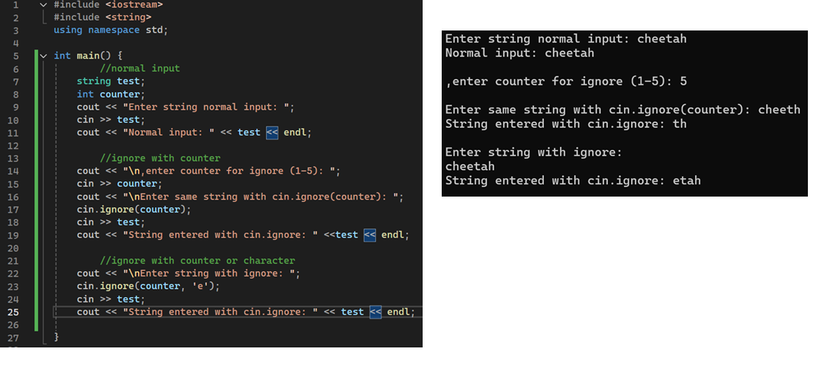

cin.ignore function

code breakdown
- cin.ignore(counter,delimitier)
- cin.ignore : cin method to ignore input of the carrot for the next input
counter : this is an integer that represents the number of characters to skip
delimiter : This is the value to stop skipping (only applies to the first character it encounters that matches
- note: